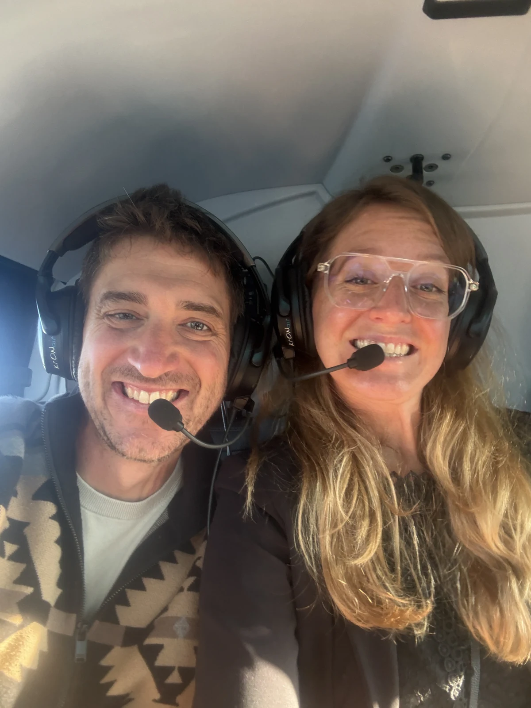

A mountain elopement takes a small, trusted circle. Here are the people who make your day happen — from the first frame to the final detail.

Mountain Elopement — a small local team behind your day.
We are a small, local team at home in the Dolomites and the Alps — led by planner Jlenia and photographer Andreas. For years we have guided couples to quiet summits and hidden lakes, capturing the day exactly as it feels — unposed, unhurried, real.
Between us we plan and photograph your whole day — and where it makes your day even better, we bring in a trusted circle around us.
Say hello →Our planning partner in the Dolomites — logistics, permits, accommodation and every detail handled on the ground, so you can simply be present. With years of experience and having grown up in the heart of the Dolomites, she knows every stone — which makes for a wonderfully relaxed atmosphere.
Dolomites Wedding Planner →Founder and lead photographer — Tyrolean, at home between Innsbruck and the Dolomites. Award-winning (Way Up North Awards 2024), published in Rangefinder. Andreas guides every couple to the light and frames the day as it truly feels.
Blitzkneisser →